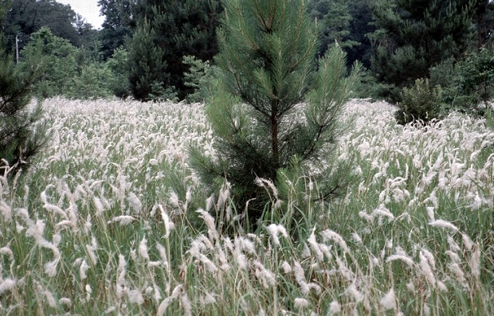

Quick Facts
- Native to Southeast Asia
- Introduced to the U.S. in the early 1900s
- Found in 73 countries
- Spreads by rhizomes and seeds
- Can grow up to 6 feet tall
- Forms dense stands that outcompete native vegetation
- Difficult to control
Control Methods
- Herbicides
- Prescribed burning
- Biological control
- Manual removal
- Prevention



Swipe left or right to see more images!